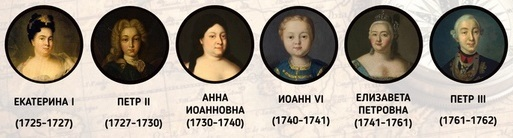
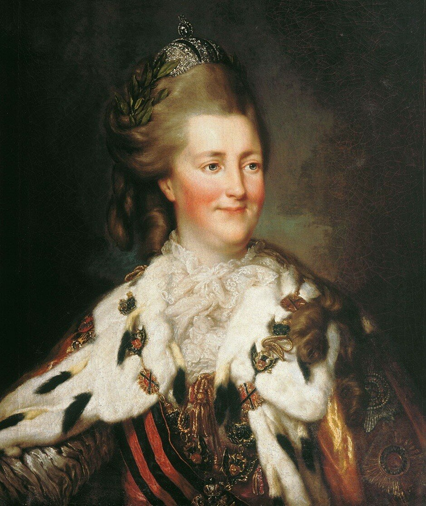
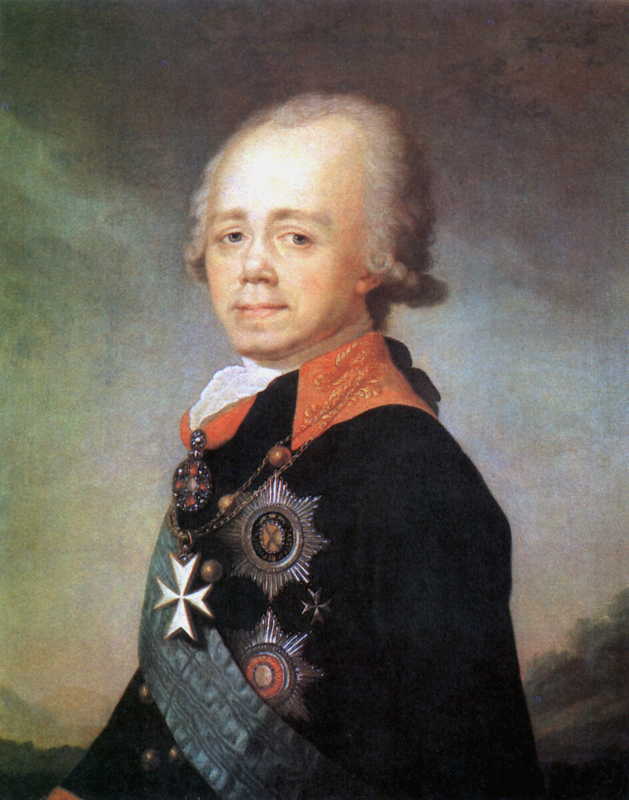

Налоговые реформы Петра I
В эпоху Петра I в сфере налогообложения произошли следующие радикальные изменения: подворное налогообложение было заменено подушной податью, введены новые виды налогообложения — горная подать, гербовые сборы, пробирная пошлина, экзотические виды налогообложения — налог на бороды, существенному реформированию была подвергнута организационная система сбора налогов, были заложены основы системы местного самоуправления и местных налогов и сборов. В эпоху Петра I широкое развитие получает система взимания налогов через откупщиков.
")
Для покрытия дополнительных расходов вводится ряд чрезвычайных налогов: деньги драгунские, рекрутские, корабельные, подать на покупку драгунских лошадей. Создателями и разработчиками новых видов налогообложения были прибыльщики. По инициативе прибыльщиков были введены подушная подать, гербовый сбор, налоги с постоялых дворов, печей, плавных судов, арбузов, орехов, продажи съестного, с найма домов, ледокольный и другие налоги и сборы, введено удвоенное обложение податями староверов.
Петр I разделяет все торговое и ремесленное сословие на купеческие гильдии и ремесленные цехи. Основными целями являются полицейские, при этом преследуется также и фискальный интерес: купцы облагаются гильдейским сбором, фискальное значение которого постепенно возрастает.
Регламентом Главному Магистрату 16 января 1721 г. было повелено всех регулярных граждан разделить на две гильдии. Реформы в сфере обложения, осуществленные при Петре I, привели к тому, что общая сумма прямых налогов за период с 1680 по 1724 г. возросла с 494 тыс. руб. до 4731 тыс. руб
В 1719 г. вводится горная подать, которая уплачивалась натурой в размере десятой доли валовой добычи ископаемых. Налогообложение горных промыслов осуществлялось в России еще в XVII в.
Горная подать представляла собой специальный вид налога, взимаемый государством с горнопромышленников и предприятий, осуществляющих разработку недр.
Промышленники обязаны были доставлять десятую долю от прибытка в казну, которой предоставлено и право преимущественной покупки золота, серебра, меди и селитры по ценам, определенным Берг-Коллегией.
Бурмистерской палате было поручено питейное дело, однако в 1705 г. был восстановлен отмененный в 1682 г. откуп. С 1716 г. винокурение становится свободным, но подлежит обложению акцизом. Губернаторам было поручено измерять и клеймить кубы и брать с ведра емкости по полуполтинной в год.
Важным нововведением эпохи Петра I является установление системы взимания гербовых сборов.
С 1702 г. гербовая бумага получает наименования двухрублевой, рублевой, четырехгривенной, четырехкопеечной и двухкопеечной, и в этих размерах цены оставались до 1763 г., когда были увеличены в два раза.
В 1699 г. установлена пошлина на бороды. В 1705 г. с лиц, отказавшихся брить бороды, взималось. Жители Сибири были освобождены от данного вида обложения.
В 1700 г. вводится пробирная пошлина. Размер пошлины зависел от веса золотых и серебряных изделий, а также искусства ремесла.
До Петра I сбор налогов осуществлялся рядом финансовых приказов. До 1717г. приказная система сохраняется, но подвергается существенному реформированию. Существенные изменения в системе сбора налогов начинают происходить с изменением административно-территориального деления России и создания должности губернаторов, на которых возлагаются функции по контролю за сбором налогов.
Указом от 17 марта 1711 г. Правительствующему Сенату поручается устройство государственных доходов. В том же году учреждаются должности фискалов. Сфера деятельности фискалов первоначально ограничивалась контролем за деятельностью государственных учреждений и должностных лиц. Фискалы возглавлялись обер-фискалом . Генеральный фискал назначался царем, а его помощник — обер-фискал — Сенатом. Фискалы были освобождены от обязанности по уплате податей, от подсудности местным властям и от ответственности за неправедные доносы.
В 1718—1720 гг. были определены функции, утверждены структура и штаты финансовых коллегий, а также Генеральный регламент, который устанавливал обязанности должностных лиц коллегии. Каждая коллегия состояла из присутствия, штата чиновников и канцеляристов. При коллегии состоял фискал, контролировавший деятельность финансовой коллегии. Камер-коллегия имела сеть своих учреждений на местах, ведала государственными доходами, надзирала над окладными и неокладными приходами. Под окладными понимались налоги и сборы, при которых налоговые обязательства налогоплательщика исчислялись по действующим ставкам на единицу обложения. Неокладными налогами и сборами являлись таможенные пошлины, откупа, налоги с заводов и другие, размер которых не был заранее известен.
Подушная и оброчная подати
В системе прямых налогов основным изменением в эпоху Петра I был переход от подворного налогообложения к подушной подати. Подушная подать представляла собой вид прямого личного налогообложения, взимаемого с «души» в размерах, не зависящих от величины дохода и имущества.
В России с конца XVIII в. подушный налог становится главным доходом государства. Впоследствии от уплаты подушной подати освобождались купцы, почетные граждане и другие категории населения. Поэтому со временем подушный налог превратился в чисто крестьянский налог, сбор которого вела крестьянская община, а поступление в полной сумме гарантировалось круговой порукой.
Для целей налогообложения использовались следующие понятия: ревизская душа (единица учета мужского населения, подлежавшего обложению подушной податью) и ревизские сказки (списки, в которые заносилось мужское население для обложения подушной податью).
В начале XVIII в. прямое налогообложение основывалось на данных подворной переписи 1678 г. В 1710 г. проводится новая подворная перепись, учитывавшая не только количество дворов, но и количество душ.
Подушная подать была введена в 1724 г. с окончанием переписи. Подворное налогообложение сохранялось для населения Украины и Белоруссии. Параллельно с подушной податью возникает такой новый вид налогообложения, как оброчный. Оброчный сбор вводится в качестве добавочного подушного сбора с однодворцев. Оброчный сбор имел целью уравнять платежи однодворцев с платежами дворцовых и вотчинниковых крестьян, плативших кроме подушной подати еще оброк своим владельцам.
Введение подушной подати и оброчного сбора позволило увеличить поступления по прямым налогам, по отдельным оценкам, в 2— 2,5 раза.
В доходах казны поступления по этому виду налогообложения достигали 50%. Впоследствии доля поступлений от подушной подати постепенно снижалась в результате освобождения отдельных категорий населения от ее уплаты, снижения размеров оклада с ревизской души возрастания значения косвенных видов налогообложения.
Увеличение сбора прямых налогов не основывалось на увеличении производительных сил страны, а представляло собой механическое увеличение налогового бремени на податное население.
Изменения в налоговой системе в 1725-1730 гг.
В XVIII в. налоговая система России существовала в том виде, в котором она была создана при Петре I, за исключением отдельных изменений.

При императрице Екатерине I в 1727 г. было осуществлено снижение размера подушной подати, установлена возможность получения рассрочек по уплате штрафов. Создается Комиссия о подати, рассматривавшая пути совершенствования системы взимания подушной подати.
В связи с переводом войск из сельской местности в города и посады происходят организационные изменения во взимании подушной подати. Обязанность по сбору подушной подати возлагается на губернаторов.
Комиссия о подати продолжала свою деятельность при Петре II и была распущена в 1730 г., ее предложения не были реализованы.
При Анне Иоанновне издается ряд указов об усилении борьбы с недоимщиками. В 1731 г. полки были возвращены в уезды, и обязанность по сбору подушной подати вновь передается армии. Существенно реформируется система взимания горной подати.
Ряд изменений производится в сфере косвенного налогообложения: торговым компаниям отдаются на откуп рыбные промыслы в Белом и Каспийском морях и селитряное и поташное производства. Казна оставляла за собой продажу вина, торговлю ревенем и закупку пеньки.
При Елизавете Петровне производятся изменения в организации купеческого сословия. 19 января 1742 г. поведено разделить купечество на три гильдии, из которых каждая избирает старшину, старосту и товарища. На этих лиц возлагаются взимание разного рода сборов.
Налоговая система и налоговая политика в России во второй половине XVIII в.

Ряд изменений в налоговой системе России был осуществлен в период царствования Екатерины II. Органы государственного управления Российской империи в тот период не имели достаточных сведений не только о доходах государства, но и даже о количестве населенных пунктов.
В екатерининскую эпоху прямые налоги в бюджете играли второстепенную роль по сравнению с налогами косвенными. Такое со-отношение в принципе соответствовало представлениям самой императрицы о справедливости распределения налогового бремени и правильности построения налоговой системы.
В период царствования Екатерины II основным прямым налогом оставалась подушная подать, на долю которой приходилось от 30 до 33% государственных доходов. Относительно незначительные доходы приносили подворная подать и другие прямые налоги. Подушная подать могла раскладываться общиной между членами общины по своему усмотрению. От уплаты подушной подати было освобождено купеческое сословие в связи с введением для него особого вида налогообложения — гильдейской подати.
Cущественно возрастают поступления от оброчного сбора. После секуляризации монастырских имений в 1762 г. значительно увеличивается число «сельских обывателей, положенных в перепись и не платящих во дворец или вотчинникам». Оброчный сбор был распространен на всю эту группу и составил видную статью бюджета.
Важной частью реформ Екатерины II в сфере налогообложения становится введение для купеческого сословия гильдейской подати, представлявшего собой разновидность промыслового налога. Манифестом 17 марта 1775 г. купечество было освобождено от подушной подати; принадлежность же городских жителей к купечеству была обусловлена записью в гильдиях. Гильдейская подать была процентным сбором, взимавшимся с объявленного капитала.
Манифестом 28 июня 1782 г. отменяется «горная свобода», а «право собственности каждого в имении его распространено на недра земли, на все сокровенные минералы и произращения и на все делаемые из того металлы». Поиск и добыча полезных ископаемых предоставлялись «доброй воли земледельца». Отменялась обязанность горнопромышленников отдавать в казну золото и серебро по определенным законом ценам, однако сохранялась обязанность по уплате горной подати в размере проценте от добычи.

Ряд изменений в налоговую систему Российской империи был введен в период императора Павла I. Созданная Павлом I в 1796 г. особая комиссия предложила заменить хлебный сбор деньгами, что должно было дать казне дополнительный доход до 5,6 млн руб. ассигнациями.
На долю косвенных налогов приходилось свыше 40% государственных доходов, при этом около половины поступлений от косвенных налогов давали питейные налоги. Оклад подушного налога развёрстывался общиной между членами фактически произвольно. С 1797 г. российские
губернии были разделены на 4 класса в зависимости от плодородия почвы и их хозяйственного значения, и для каждого класса были назначены отдельные подушные оклады. Указом 18 декабря 1798 г. было поведено установить разные размеры оклада оброчного сбора.
В период правления Павла I продолжалась постепенная замена части натуральных повинностей денежными сборами. 18 декабря 1796 г. издается Указ о замене подушной подати, взимавшейся в виде хлебных сборов, денежными платежами.
При Павле I осуществляется попытка вернуться к началам горной свободы. Указом 24 августа 1798 г. всем желающим было разрешено производить разработку угля на казенных землях без платежа оброка, а на землях частных людей — «по добровольному с помещиками условию, в случае же несогласия оных — по Берг-Привилегии». Данное распоряжение не имело, однако, значительных последствий.